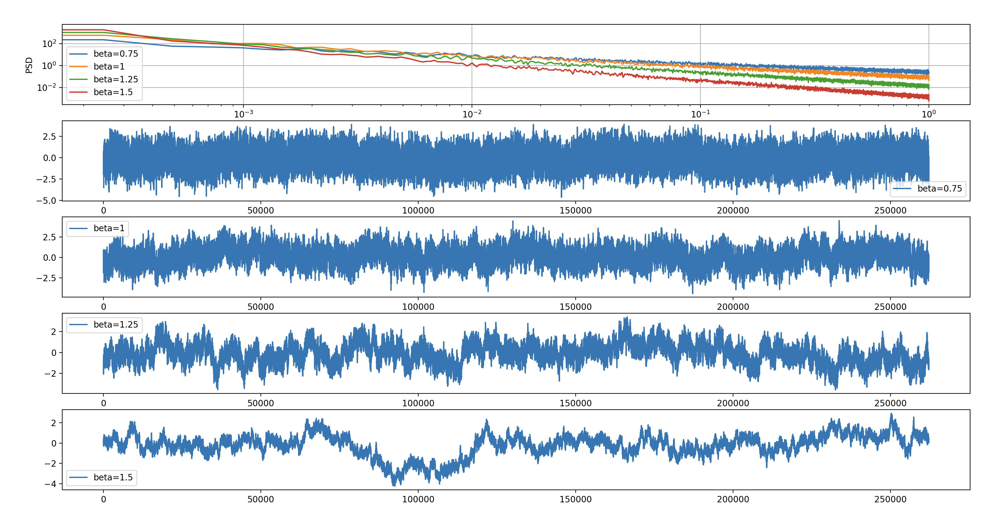

Configuring NDS
The scripts provided with NDS are configured using a settings.yaml file.
By default, this file is stored in $HOME/.nds and created when you run the nds_post_install_config script.
However, you can specify custom locations by passing the --settings_path=/path/to/settings.yaml argument to most NDS scripts.
You can customize the behavior of the NDS components by editing the settings.yaml as described below.
Encoder
The encoder transforms behavioral data into spike rates using a pretrained model.
It is comprised of three sub-components, the preprocessor, the encoder model, and the postprocessor.
Each of these sub-components can be configured using the setttings.yaml file.
Additionally, the input and output and system behavior can be configured.
Encoder period
The time interval between encoder iterations can be configured by changing the loop_time configuration:
timer:
loop_time: 0.02 # seconds
Input
Configure one of the 2 possible behavior data input sources for the encoder.
Behavior LSL stream
To enable LSL as input for the encoder apply the following configuration:
encoder:
input:
type: "LSL"
The available settings for this input source are:
encoder:
input:
lsl:
stream_name: "NDS-Behavior"
# maximum time for attempting a connection to an LSL input stream
connection_timeout: 60.0 # seconds
Prerecorded behavior file
To enable file as input for the encoder change the following configuration:
encoder:
input:
type: "file"
The available customizations for this input source are:
encoder:
input:
file:
# paths can be absolute or relative to the current work directory
path: "sample_data/session_4_behavior_standardized.npz"
sampling_rate: 50 # Hz
timestamps_array_name: "timestamps_train"
data_array_name: "vel_train"
The npz file is expected to include two arrays, one with timestamps and another one with behavior data. The name of each array has to be defined in the configuration file, this information is required by the encoder in order to read the data correctly. Export standardized model for streaming contains an example of how to save a file in the correct format.
Plugins
Preprocessor
Enable the encoder to use your custom preprocessor by changing the path:
encoder:
# set a path to your custom preprocessor plugin
preprocessor: 'plugins/preprocessor.py'
Postprocessor
Enable the encoder to use your custom postprocessor by changing the path:
encoder:
# set a path to your custom postprocessor plugin
postprocessor: 'plugins/postprocessor.py'
Model
To integrate your customized model set the following configuration:
encoder:
# path to the model entrypoint
model: 'plugins/model.py'
Output
The encoder can be configured to output to a file or to an LSL stream. Each output type allows its own customization.
Spike rates LSL output
To enable LSL output apply the following configuration:
encoder:
output:
type: "LSL"
The available customizations for this output type are:
encoder:
output:
lsl:
# possible values are "float32", "double64", "int8", "int16", "int32", "int64"
channel_format: "int16"
stream_name: "NDS-SpikeRates"
stream_type: "SpikingRates"
source_id: "SimulatedSpikeRates"
instrument:
manufacturer: "Hardware Company"
model: "Simulated"
id: 0
stream_name is the most relevant in this context as it is used by the ephys generator script to discover and connect to the LSL source.
Save spike rates to file
To set the encoder output to a file apply the following configuration:
encoder:
output:
type: "file"
The available customizations for this output type are:
encoder:
output:
file: "output.csv"
The format of the output file is CSV without header. The first column is the timestamp and the following columns are the spike rates for each unit.
Ephys Generator
The electrophysiology (ephys) generator is responsible for synthesizing spikes based on input spike rate data that it receives.
The ephys generator produces three outputs that are continuously pushed to 3 LSL streams.
The system properties and streams can be configured using the settings.yaml file.
The available general customizations for ephys generator are:
ephys_generator:
random_seed: 12332323
resolution: 0.25 # uV per count
raw_data_frequency: 30_000 # Hz
n_units_per_channel: 1 # number of distinct waveforms in each channel
refractory_time: 0.001 # seconds
lsl_chunk_frequency: 1_000 # Hz
Random seed
random_seed is used to initialize NumPy’s underlying random number generator which is useful for reproducibility between runs.
Resolution
resolution is the resolution of the electrophysiology data in microvolts per count.
Raw data frequency
raw_data_frequency represents the sampling rate of the raw data output. This can have an impact on the performance of the simulation. While a typical value is 30kHz, on machines with less-capable CPUs this should be lowered to 10kHz.
Units per channel
n_units_per_channel defines how many neurons are being captured per channel.
Refractory time
refractory_time is the minimum time between two consecutive spikes for a unit.
LSL chuck frequency
lsl_chunk_frequency determines how often data is being pushed to the LSL streams.
Input
Ephys generator typically consumes the output from the encoder, in which case the input type should be LSL.
Spike rates LSL input
To use an LSL input apply the following configuration:
ephys_generator:
input:
type: "LSL"
The available customizations for this input type are:
ephys_generator:
input:
lsl:
stream_name: "NDS-SpikeRates"
# maximum time for attempting a connection to an LSL input stream
connection_timeout: 60.0 # seconds
If ephys generator should read the rates from the encoder via LSL, then the stream_name in this configuration should match the stream_name from the encoder output.
Testing input
Like the name suggests, this input is meant for testing. To use it, apply the following configuration:
ephys_generator:
input:
type: "testing"
The available customizations for this input type are:
ephys_generator:
input:
testing:
n_channels: 50
When the testing input is configured, the ephys generator will output spikes based on constant spike rates for each channel/unit. The rates are uniformly distributed in the interval [0, 100). This means that, if n_channels is set to 50, the first unit will have a spike rate of 0, while the last unit will have a spike rate of 99 spikes/s.
Output
Following are the configurations for each of the 3 LSL outputs.
Raw
The available customizations for this output type are:
ephys_generator:
output:
raw:
lsl:
# possible values are "float32", "double64", "int8", "int16", "int32", "int64"
channel_format: "int16"
stream_name: "NDS-RawData"
stream_type: "Ephys"
source_id: "SimulatedRawData"
instrument:
manufacturer: "Hardware Company"
model: "Simulated"
id: 0
LFP
The available customizations for this output type are:
ephys_generator:
output:
lfp:
data_frequency: 1_000 # Hz
filter_cutoff: 300 # Hz
filter_order: 4 # number
lsl:
# possible values are "float32", "double64", "int8", "int16", "int32", "int64"
channel_format: "int16"
stream_name: "NDS-LFPData"
stream_type: 'LFP'
source_id: "SimulatedLFPData"
instrument:
manufacturer: "Hardware Company"
model: "Simulated"
id: 0
Spike Events
The available customizations for this output type are:
ephys_generator:
output:
spike_events:
lsl:
# possible values are "float32", "double64", "int8", "int16", "int32", "int64"
channel_format: "int16"
stream_name: "NDS-SpikeEvents"
stream_type: "SpikeEvents"
source_id: "SimulatedSpikeEvents"
instrument:
manufacturer: "Hardware Company"
model: "Simulated"
id: 0
Noise
Noise is being generated with the help of the colorednoise library. The following noise characteristics can be adjusted:
ephys_generator:
# Gaussian (1/f)**beta noise settings
noise:
# exponent
beta: 1.5
# noise standard deviation
standard_deviation: 40.0
# low-frequency cutoff. The power-spectrum below fmin is flat.
fmin: 0.0001
# unique noise samples to generate per channel
# the noise is repeated if the samples are all used
samples: 262144
For example here’s how changing the beta can impact the output raw data:

Loading custom spike waveforms
It is possible to configure the waveforms for the spikes synthesized by the ephys generator by adjusting the following configuration:
ephys_generator:
waveforms:
n_samples: 48
prototypes:
1: "[0.0, 8.5, 17.0, 24.0, 30.75, 47.75, 64.5, 72.75, 81.25, 72.75, 64.5, 28.0, -8.25, -99.25, -190.0, -194.25, -198.5, -172.0, -145.25, -95.0, -44.75, 1.5, 47.75, 68.75, 89.5, 92.5, 95.25, 82.5, 70.0, 57.5, 44.75, 29.5, 14.0, 7.0, 0.0, -2.75, -5.5, -7.0, -8.25, -4.0, 0.0]"
2: "[0.0, -4.0, -8.25, -16.75, -25.0, -74.0, -123.0, -111.75, -100.5, 8.5, 117.5, 137.25, 156.75, 117.5, 78.5, 22.5, -33.5, -41.75, -50.25, -47.5, -44.75, -40.5, -36.25, -25.0, -14.0, -5.5, 3.0, 10.0, 17.0, 18.25, 19.75, 11.25, 3.0, -1.25, -5.5, -5.5, -5.5, -4.0, -2.75, -1.25, 0.0]"
3: "[0.0, -5.5, -11.0, -25.0, -39.0, -95.0, -151.0, -151.0, -151.0, -99.25, -47.5, 8.5, 64.5, 106.5, 148.25, 175.0, 201.5, 169.25, 137.25, 89.5, 42.0, 22.5, 3.0, -5.5, -14.0, -16.75, -19.5, -21.0, -22.25, -22.25, -22.25, -22.25, -22.25, -21.0, -19.5, -15.25, -11.0, -9.75, -8.25, -4.0, 0.0]"
unit_prototype_mapping:
default: 1
1: 3
A new custom waveform should be added first to the prototypes dictionary, where the key can be any integer serving as the prototype ID and the value is the JSON list of the waveform samples. In the next step, the unit_prototype_mapping dictionary should be updated to include the new prototype ID for the unit that is expected to use it. The default key is used for all units that are not explicitly defined in the mapping.
So in the example above, unit 1 will use waveform prototype 3, and units 0 and 2 will both use waveform prototype 1.